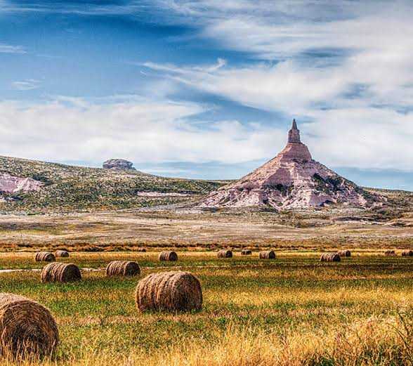

Nebraska ist ein US-Bundesstaat im Mittleren Westen der Vereinigten Staaten. Der Name Nebraska stammt aus der Oto- bzw. Omaha-Sprache mit der Bedeutung
„flaches Wasser“. Der Name rührt vom Platte River, der durch den Staat fließt. Ursprünglich Teil der „Great American Desert“, ist Nebraska jetzt einer der größten Produzenten
landwirtschaftlicher Erzeugnisse. Hiervon zeugt auch der Beiname Nebraskas: Cornhusker State („Maisschäler-Staat“).
Quellen- und Lizenzhinweis:
Dieser Text basiert auf dem Wikipedia-Artikel
Nebraska
(geänderte Fassung) und steht unter der Lizenz
Creative Commons Attribution-ShareAlike 4.0 International (CC BY-SA 4.0).
Das Bild ist von
Ab in den Urlaub